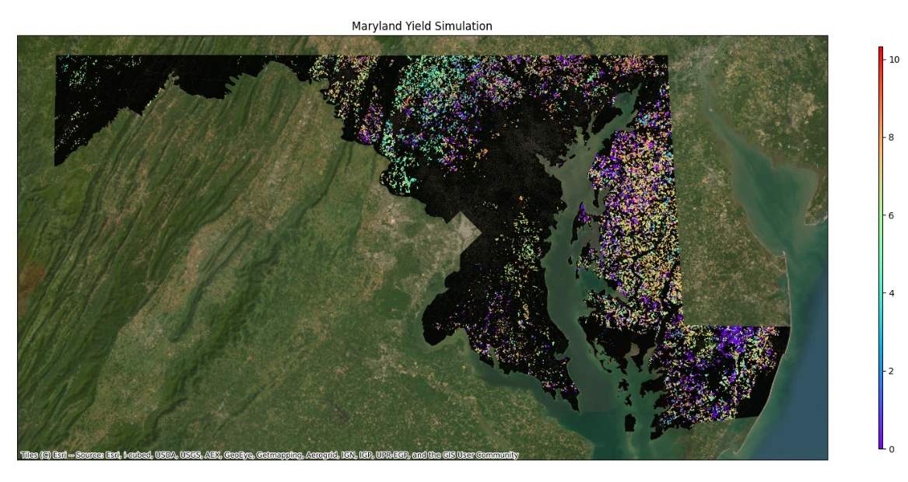

Running an EPIC Experiment
1. Create new workspace
It willl create a new workspace in the new directory named 'Test'. This 'Test' folder will automatically create sub-folders for EPIC model like model, opc, sites, soil, weather and a config.yml doc in it. You need to to go to Test folder before simulation starts.2. Edit config file as needed
This package is mainly designed for study regions in the USA. In the config.yml file, update the settings in the config file based on your area of interest (AOI) and preferences. For example, if you need to run the model for the state of Maryland, USA, modify these rows as follows:
EXPName: Nitrogen Assessment (Your Experiment Name)
Region: Maryland
code: MD
Fields_of_Interests: ./CropRotations/MDRotFilt.shp
Note: The MDRotFilt.shp file is the same one downloaded and placed in the CropRotations folder in the previous step.
Guideline: The rule of thumb is to edit the configuration file using the region code specific to your study region, as done here using "MD" throughout the config file.3. Prepare OPC File
OPC refers to the agricultural management practice files which is yet to automated. For now, you need to prpare management files and keep it in a new folder named 'OPC' inside the 'Test' directory.
4. Prepare the workspace
This command will automatically pre-process the input files before simulation.5. And execute the simulations
This command will simulate the operation/s and automatically save the results in a new folder named 'Output'.This command will also create a post_process.pynb doc which will have an example code to visualize the required parameters from ACY and DGN files.
You can edit this code as per your requirements. You just have to identify the parameters and edit accordingly.
Example Visualization
6. Post-process the output visualization
You need to post-process the output files according to your interests. Generally, as an agricultural reserachers you need to process the DGN and ACY files.
For post-processing
This will run the example code post_process.pynb which has been created in the Test folder. It will take a variable called 'YLDG' which denotes the yearly yield in t/ha/yr for all the sites and put it in a sepearte column corresponding to all the site ids with creatinh a yldg.csv file.For visualization
It will simply plot the 'YLDG' variable corresponding to the site ids and crate a map for study region.Your plot will look like this:
